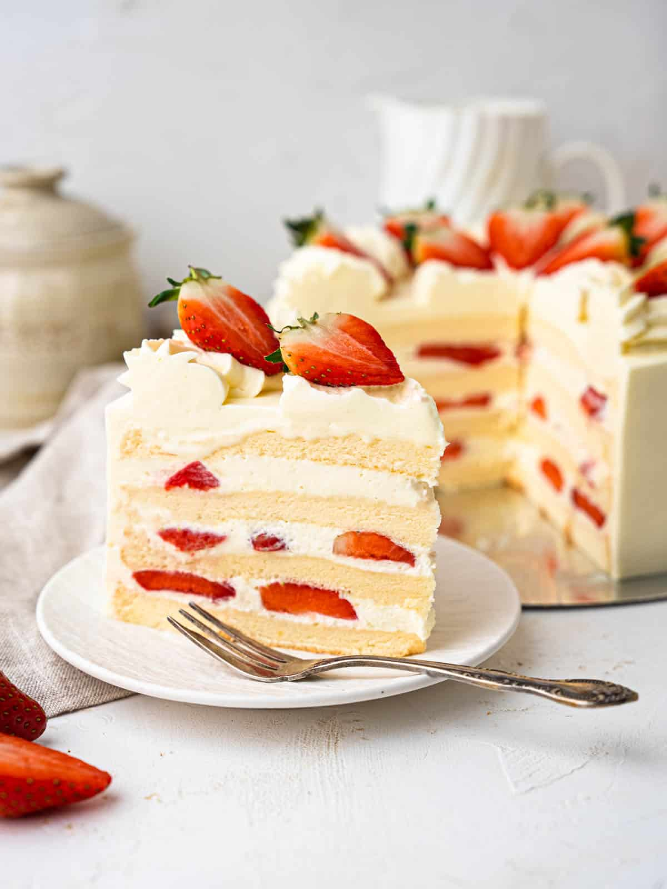

Strawberry Shortcake

Description
Soft and fluffy sponge cake filled with fresh strawberries lightly whipped vanilla cream. The perfect version of the classic Japanese-style strawberry shortcake. A classic asian-bakery style sponge and fluffy cream that melts in your mouth like a dream!
Ingredients
- 4 large eggs
- 50g whole milk
- 45ml Vegetable oil
- 55g Cornstarch
- 55g All-purpose flour
- 90g Granulated sugar
- 65g Granulated sugar
- 80ml Water
- 600ml Whipped Cream
- 100g Granulated sugar
- 1 tsp Vanilla extract
- 370g Strawberries
Method
- Preheat the oven to 140°C fan forced/ 150°C convection
- Line the bottom of an 8-inch cake tin with parchment paper
- In a medium-sized bowl whisk the egg yolks, mil, and oil
- Sift the flour into the egg yolk mixture and mix until combined
- In another bowl with an electric whisk, or in the bowl of a stand mixer fitted with a whisk attachment, whip the egg whites with sugar until stiff peaks
- Add 1/3 of the meringue into the egg yolk mixture and mix until smooth
- Transfer the lightened egg yolk mixture to the remaining meringue and fold carefully until just combined
- Transfer the batter to the cake tin
- Place the cake tin in a water bath (a tray/tin of boiling water) and bake for 70 minutes
- Remove from the oven and allow it to cool completely
- Once cooled run a knife around the edge of the cake tin and invert the pan
- Wrap in cling wrap and place in the fridge until assembly
- Whip the cream with an electric whisk and slowly stream the sugar in
- Beat until stiff peaks
- Combine the sugar and water in a small bowl and microwave for 30 seconds until melted, cool
- Slice half the punnet of strawberries
- Slice the cooled cake into three layers
- Lay one layer of cake down and brush with the sugar syrup
- Spread on a layer of cream, a layer of strawberries and then cover with another layer of cream, repeat
- Place the last layer of sponge on top and give the cake a thin crumb coat before icing the entire cake with cream
- Place star tip into a piping bag and fill it with the remaining cream
- Pipe a border around the edge of the cake and decorate with the remaining strawberries